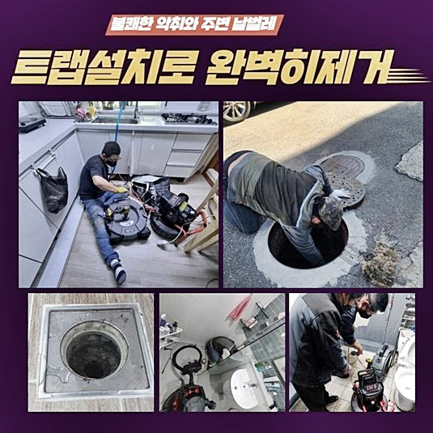
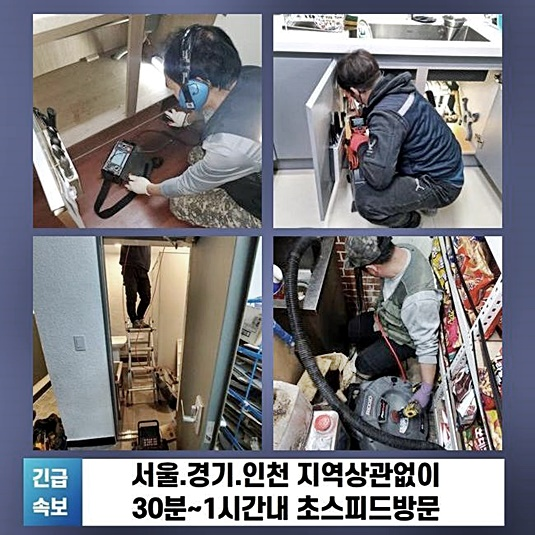
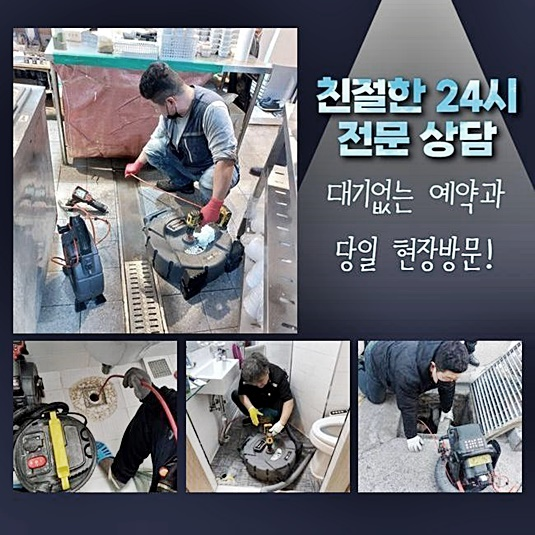
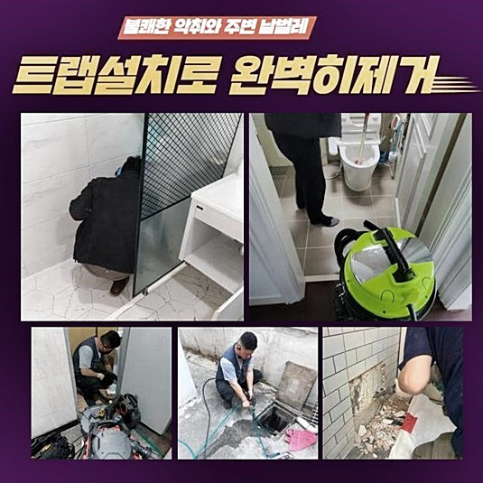
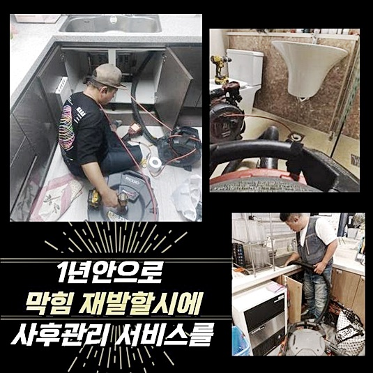
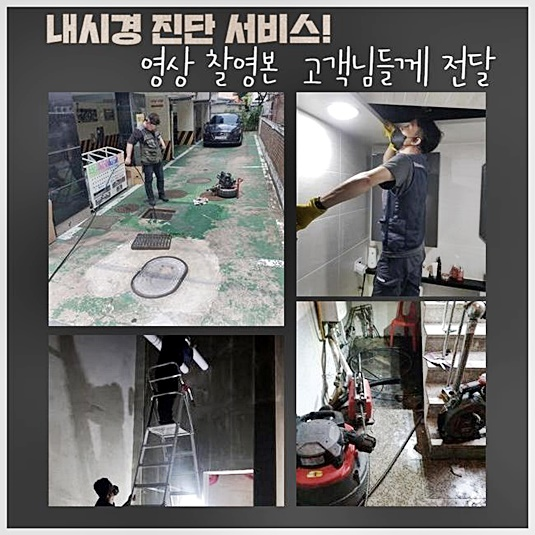
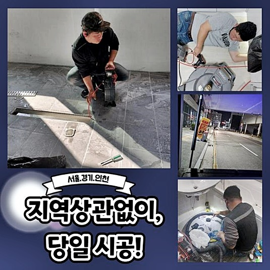

🏠 안산 월피동대변기막힘 해양동 하수구청소장비 누수탐지공사
안산시 상록구 배관막힘 전문 시공 후기

📋 작업 개요
- 위치: 안산시 상록구 해양동
- 서비스 유형: 배관막힘, 하수구청소, 누수수리, 배관수리, 고압세척, 내시경점검
- 작업 일시:
- 업체명: 하수구수사대 (010-5615-2118)
🔍 문제 상황
안산 월피동대변기막힘 해양동 하수구청소장비 누수탐지공사
하수구가 막혀버렸을때 여러분들께서는 어떤방식으로 처리하려고 하실지 궁금합니다
대다수의경우 셀프조치를 통하여 처리하려고 하시죠
이번시간은 음식점시설에서 하수구가막혀 문의를받고 방문하여 작업했던사례를 소개해보도록 해볼게요!
오픈준비를 하고계시던 고객님께서 물을쓰실때 외부쪽에 위치하고있는 하수관에서 역류문제가 일어나셔서 저희에게 의뢰하신것인데요
첨단기기들을 준비해서 현장으로 조속하게 이동했어요
현장으로방문후 마중나와계시던 고객분과 인사를나눴는데요
준비하고계시던 상업이 잘되려면 저희업체가 해드릴수있는건 배관막힘을 타파시키는것이므로 최선을다하여 진행해야겠다는 마음으로 임했습니다
외부하수구가 있는위치로 자리를옮겼어요
이쪽에서 역류현상과 다량의모래가 보여지는것에 궁금해하셨죠

🔎 원인 분석
💡 전문가 진단: 정밀 진단 장비를 사용하여 슬러지의 고착 여부를 판명하고 타격/세척 작업을 실시했습니다.
이러한부분은 건물관리자와 의사소통을하여 합의를보시는게 좋을거라고 전달드렸는데요
이와같을땐 전에거주하던 세입자분이나 건물주분에게 책임소재를 물을수있기에 수리비용에 있어서 요구할수있는데요
유선상으로 전달받았던 정보와같이 바깥맨홀에 흙같은것이 가득하였어요
이쪽공간에서 막힘증세가 발생했다면 내부하수구에서 배수상태가 원활하지 않음으로 예측할수있었네요
짐작한대로 의뢰인분이 주방쪽에 자리잡고있는 바닥하수도에서 역류현상이 보인다고 말해주셨죠
곧장수리에 들어가기로했어요
주방으로 이동하여 하수구쪽에 배수를 체크해보았죠
예상했던대로 물이빠지지못하고 역류증세까지 일어나고있었는데요
안쪽배관이 막혀버리면서 물빠짐자체가 가능할수없었기에 발생된문제였죠
바깥쪽으로 이동해서 작업하기로 계획을세웠죠
고압세척장비를 사용하기로했죠 바깥쪽에서 배관수리를 시작해보기전에 점검해보니 통수기계를 활용해서 뚫어냈던 흔적을보았죠

🔧 작업 과정
이러한경우에는 스프링기계로 뚫을수는있지만 막힌위치에 구멍뚫는정도밖에 불과하므로 일시적인대처는 가능하긴하여도 성공적인 결과물로는 연결되지못해 얼마못가 다시막힐수있죠
그러므로 작업진행시 꼼꼼하게 진행해봐야하는게 중요한것이죠
오수받이쪽에 강한 물을쏘아주면서 청소과정에 돌입했어요
의뢰인분의 우려와는달리 막힌곳이점점 뚫리기시작했어요
배관내부에 쌓여있던 흙이나올때 물과섞이면서 나왔는데요
오염물로 덮여있었던 외부맨홀에 위치해있던 배수관이 두눈으로보이기 시작하였어요
청소과정을 반복하니 남겨져있던 오염물까지 소거될수있었죠
하수구내시경을 투입시켜 배관속모습을 체크해봤더니 깔끔해진 하수도내부를 확인할수있었네요
내부로이동해 하수관에 물을흘려보냈더니 전과달리 빠르게 배수되는것을 살펴본후 이번작업을 마칠수있었죠
매장에서 발현한 막힘처리과정을 안내해드렸는데요
음식점같은곳에서 배수관이막혀 원활한 배수로이어지지못해 하수구이용이 불가해지면 불편함은 이만저만이 아닐텐데요
이럴때방법은 한가지 고압청소가 가능한곳을 문의해야합니다
해당기기로 성공하는결과물을 만들수있기 때문입니다
오늘처럼 요식업매장은 하수관이막히면 모든업무들이 어려워집니다
스스로해결하여 처리완료된다면 좋겠지만 해결되지못하면 전문가를통하여 대처해봐야지만 추후영업시 불편한것없이 진행할수있어요
오늘장소처럼 기름을자주 이용하는 가정집이나 영업시설이라면 빈번히 막힘문제를 일으키기에 이러한점들을 알고계시는것이 좋겠습니다
하수구가 막혔을때 내버려두지마시고 저희업체를통해 해결해보시는건 어떨까요


✅ 작업 완료
내버려두시면 누수나역류같은 현상으로 연결되실수 있으므로 문제를 발견한즉시 조치를 취해보실것을 권유드립니다
첨단도구를 보유하고있으므로 신속하게 해결할수있는 저희들에게 맡겨주세요
분명하게 작업과정들을 보여드리고있사오니 과도한비용으로 요구될까 걱정하지않아도 되겠죠
전국어디든지 한시간안으로 도착해드릴수 있사오니 염려하지마세요
오늘설명드린 내용외에 궁금한것들이 있으면 편하실때 연락을통해 물어보신다면 친절하게 응대도울게요!




⚠️ 하수구 배관 막힘 예방 및 관리 가이드
- ✅ 머리카락, 비닐, 물티슈 등 물에 분해되지 않는 이물질은 절대 흘려보내지 마세요.
- ✅ 기름기 많은 식기는 설거지 전 키친타올로 먼저 기름때를 닦아내세요.
- ✅ 주기적으로 배수구에 뜨거운 물을 가득 부어주어 유지방 고착을 방지하세요.
- ✅ 작업 후 1년 이내 재발 시 무상 A/S 보증 서비스를 제공합니다.
💡 핵심 정리
- 확실한 장비 작업(내시경 점검 및 샤프트 스케일링)으로 원인을 뿌리 뽑습니다.
- 작업 후 1년 이내에 동일한 부위 재발 시 100% 무상 A/S 서비스를 보장합니다.
- 서울 · 경기 · 인천 전 지역에 24시간 언제든 긴급 출동할 수 있도록 항시 대기 중입니다.
❓ 자주 묻는 질문 (FAQ)
🚨 안산시 상록구 배관막힘 문제로 고민이신가요?
정확한 원인 진단과 확실한 시공으로 재발 없는 해결을 약속드립니다.
24시간 긴급 출동 | 서울 · 경기 · 인천 전지역 | 1년 내 재발 시 무상 A/S